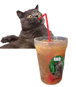

Ohai Brause Cocktail Hacks 
Dronk++
Der Dronk++ ist eine auf der GPN 2013 geborene Variation des Hacker-Cocktails "Tschunk", welcher wiederum an das brasilianische Nationalgetränk Caipirinha angelehnt ist. Mit Club Mate und Ohai Brause wird der Caipirinha in einen wachmachenden Energy-Cocktail verwandelt, der erfrischend und sauer schmeckt. Zubereitung:
- 1/2 Bio-Zitrone in Würfel schneiden.
- 2 EL braunen Zucker in ein Cocktail-Glas geben.
- 1 Tütchen Ohai Brause ins Glas kippen.
- Die Zitronen-Würfel im Glas zerdrücken.
- Crushed Ice dazu geben.
- 4 cl Rum drüber gießen.
- Mit Mate auffüllen.
Alternativ: Statt Zitronen kann man auch Limetten oder Orangen nehmen. Statt Rum geht auch Pitú.